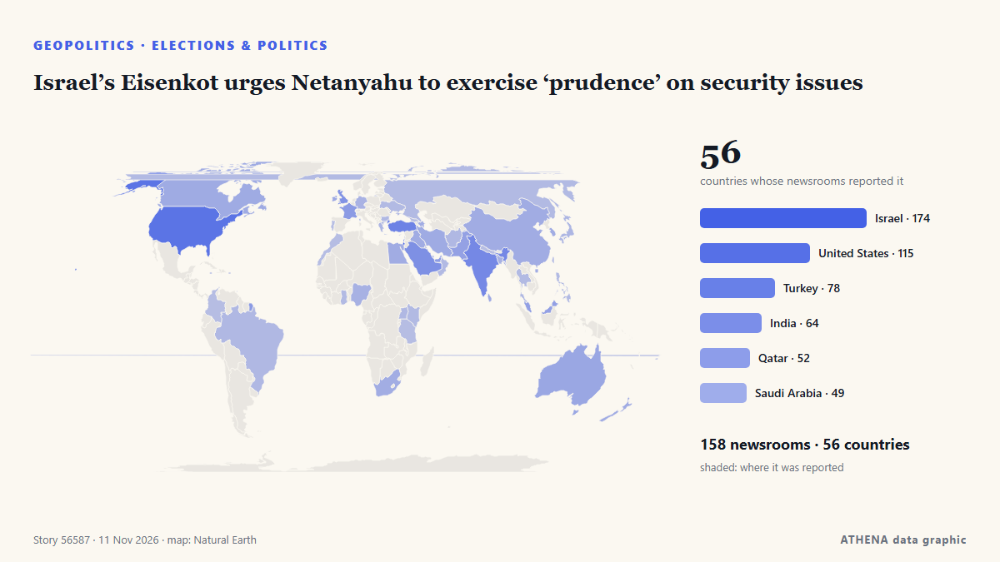

Élections et politique
SponsoriséPrésenté par  Cybernetics and Artificial Intelligence Lab Welcome to the Cybernetics and Artificial Intelligence Laboratory, established at the Department of Business Administration of the National and Kapodistrian University of Athens. The lab is headed by Professor Dimitrios Thomakos. The lab aims to do research that can be published in top venues. Our research uses tools and methods of Artificial Intelligence, and lies in the following areas: - Forecasting - Decision making - Cyber security - Finance We are always looking forward to collaborating with exceptional students!
Cybernetics and Artificial Intelligence Lab Welcome to the Cybernetics and Artificial Intelligence Laboratory, established at the Department of Business Administration of the National and Kapodistrian University of Athens. The lab is headed by Professor Dimitrios Thomakos. The lab aims to do research that can be published in top venues. Our research uses tools and methods of Artificial Intelligence, and lies in the following areas: - Forecasting - Decision making - Cyber security - Finance We are always looking forward to collaborating with exceptional students!
| 30 oct. | 0 |
|---|---|
| 31 oct. | 0 |
| 1 nov. | 1 |
| 2 nov. | 0 |
| 3 nov. | 1 |
| 4 nov. | 3 |
| 5 nov. | 2 |
| 6 nov. | 3 |
| 7 nov. | 2 |
| 8 nov. | 2 |
| 9 nov. | 3 |
| 10 nov. | 3 |
| 11 nov. | 0 |
| 12 nov. | 0 |
Les titres sont affichés en anglais, tels que publiés.

Israel’s Eisenkot urges Netanyahu to exercise ‘prudence’ on security issues
Former deputy governor tells Central Banking prime minister’s proposals are ‘stupid’ and ‘crazy’ de Central Banking
Colombian Firms Back Brazil Before Lula Win
Our experts unpack what Lula’s victory means for Brazil’s ties with Washington and how it could reshape a region trending right. de Atlantic Council
Hasina seeks new passport in clearest sign of Bangladesh return
The request marks the clearest step by Hasina to act on her plan to return to Bangladesh in December. de Express Tribune
Trump approval holds at 32%, near lowest of his career, Reuters Ipsos poll finds
The poll showed just 21% of Americans giving Trump a thumbs-up on his management of the cost of living. de The Straits Times
Israel: Eisenkot proposes October 7 probe as new Knesset sworn in
Ex-IDF chief Gadi Eisenkot has yet to forge a coalition that would allow him to replace Benjamin Netanyahu, despite the new Knesset being dominated by the critics of the current prime minister. de DW English
California voters reject measure to tax the wealth of billionaires
California voters have rejected a first-in-the-nation tax on the net worth of billionaires following a contentious ballot fight that generated huge spending by some prominent tech leaders eager to… de France 24 English
Merz nominates Ilse Aigner as Germany's president
German Chancellor Friedrich Merz formally nominated Bavarian State Parliament's President Ilse Aigner as the country's next president, paving the way for her to become Germany's first female… de AzerNews
Democratic leader Hakeem Jeffries announces bid for US House speaker
'I write to humbly request your support in connection with my candidacy to serve as the next Speaker of the House of Representatives,' says Jeffries in letter. de Anadolu Agency (English)
Merz to discuss further support for Ukraine with Magyar
German Federal Chancellor Friedrich Merz will hold talks with Hungarian Prime Minister Péter Magyar in Berlin on November 10, with further support for Ukraine among the topics on the agenda. de Ukrinform (English)
Netanyahu rival Eisenkot to be tasked with forming new government following Israeli elections
In Israel, a candidate tasked with forming a new government has 28 days to carry out the job. de Euronews English
South Africa’s ANC suffers worst-ever local elections result
South Africa's ANC has suffered its worst-ever local elections result, securing just 30% of the vote. de Al Jazeera English
Trump admits US deportation policy may have been too tough
WASHINGTON: US President Donald Trump said that his mass deportation of undocumented immigrants was “too tough,” according to an excerpt of an interview with CBS aired Sunday. de New Straits Times
Trump casts doubt on US midterm results with new fraud claims
The accusations marked a sharp reversal from the US president's initial acceptance of the results. de Free Malaysia Today
Democratic Socialist Nithya Raman wins LA mayoral race
Nithya Raman's victory in LA marks the second major win for Democratic Socialists in a year. de Al Jazeera English
Spain could ‘pull out of 2030 World Cup’ if final given to Morocco
PP leader Alberto Feijoo made the pledge on TV show 'El Chiringuito, three weeks before the general election and amid tense relations with Rabat. de The Olive Press
Israel’s president picks Netanyahu rival Gadi Eisenkot to form government
The deadlocked election had left neither Prime Minister Benjamin Netanyahu nor his strongest rival, Gadi Eisenkot, with a clear path to power. de The Independent
Le Pen and Melenchon ahead in 2027 French presidential race, poll shows
PARIS, Nov 9 - French far-right leader Marine Le Pen and hard-left rival Jean-Luc Melenchon consolidated their lead in voting intention ahead of next year's presidential election, a poll showed on… de The Straits Times